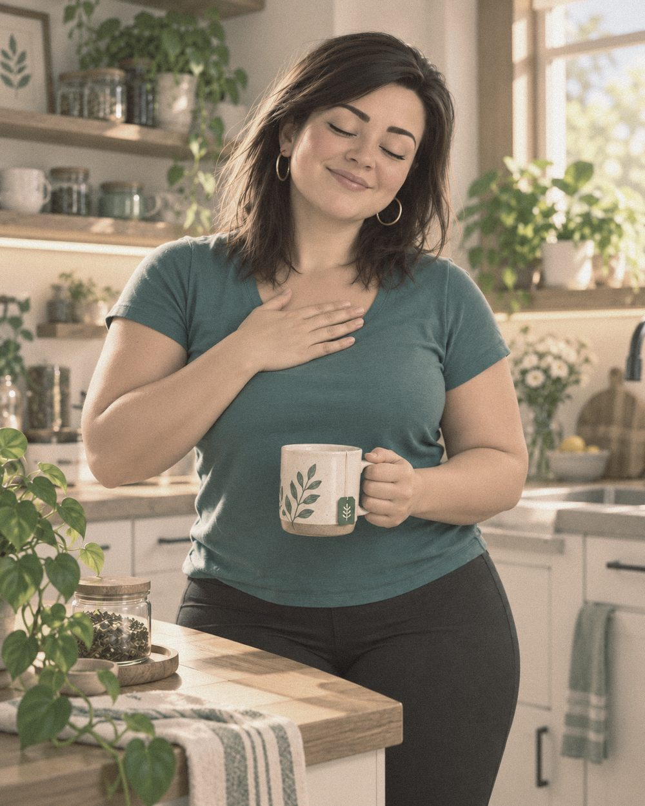
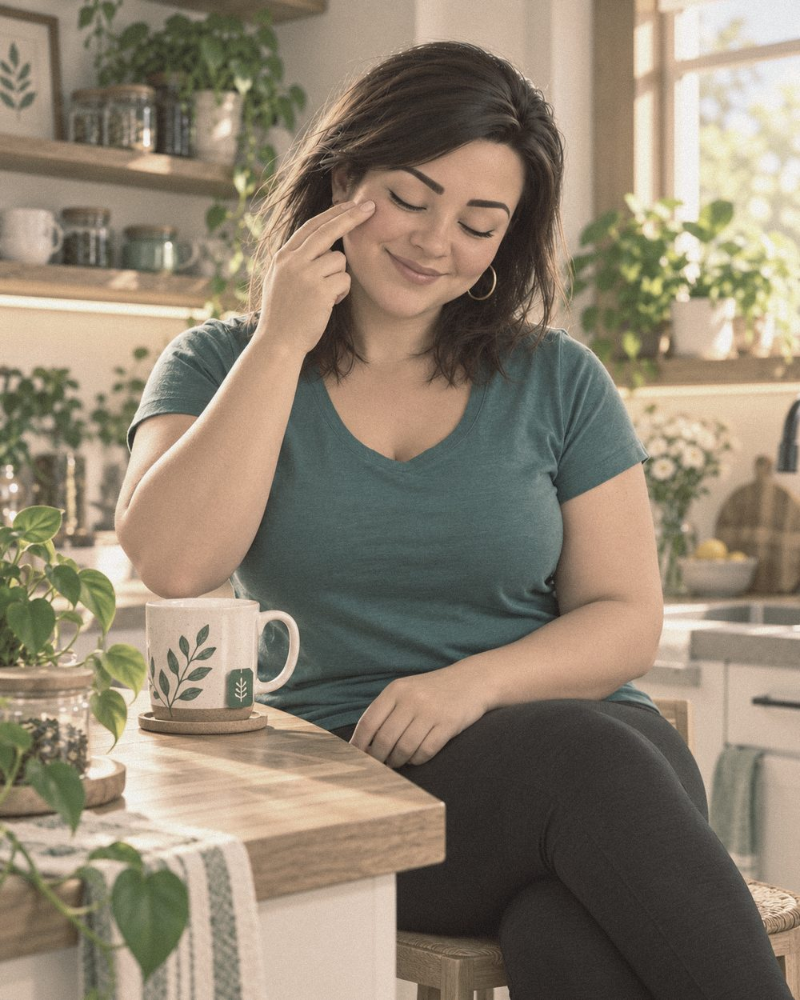

Before you startWhat this is, when to do it, how each day works
Stage 1 gave you ground.
Now build a practice that feels like you.
Overwhelm is probably what you felt. It may also have been something else, something that took over and ran you on autopilot. Anger. Worry. Guilt. A feeling you have not named yet.
Whatever it is, it shapes your reactions and steers your decisions. It costs more energy than you can see.
This stage gives you the tools to see it. Over 21 days you notice which emotions show up for you, where they live in your body, and which thought is driving them. Then you build a pause between what activates you and how you respond. That pause is mindfulness: paying attention on purpose, without judgment.
Every day is different. What you feel on Monday will not be what you feel on Thursday. The order stays the same. What you bring to it changes.
Before you begin. Accept what you find and don’t judge it. You don’t need the right word for what you feel. The chart in Part 1 helps you find it, starting from what you notice in your body.
Want to see what you are building? Read about the pause ↓
- Morning. Before the day’s noise arrives. Your system is rested, so you set the quality of your attention first.
- Lunchtime. Half the day is behind you and your body has information. Process it before it travels into the afternoon.
- Before bed. Name what the day activated, move it through, and set it down. What you don’t process, your nervous system keeps holding overnight.
- A timer or stopwatch. These twenty minutes are yours, start to finish.
- A quiet space. Somewhere you feel safe, where nobody needs you for twenty minutes.
- A notebook and pen. Or loose paper. You will write in every part.
- Optional. Some music, an essential oil, a candle. Pick one thing that tells your body this time is for you.
Three parts, in this order. Same every day. Do not skip ahead.
Mindfulness is a daily practice. More than once a day is ideal. Your 20 minutes are the anchor. In between, take two minutes wherever you are. Here is how.
Optional A text nudge between sessions.
Text (701) 543-5900Get a short reminder to take two minutes wherever you are.
Msg & data rates may apply. Msg frequency varies. Reply STOP to unsubscribe at any time.
Prefer paper? Download the printable guide (PDF).
Start with what is actually there

A. Scan your body
Sit with both feet on the floor. Close your eyes if that feels comfortable. Scan slowly from your feet to the top of your head.
You are not looking for what is wrong, and you are not judging what you find. You are looking for where something is. Any tension? Any heaviness? Anywhere you are holding something that has not released?
That is your starting point today. Work with what is actually there.
What I notice in my body:
Write it in a notebook or your notes app, or download the printable guide for lines to write on.
B. Find it on the chart
Start with the sensation. Find it on the chart. Move left to the emotion name, then to the family it belongs to. That family tells you which practice to use in Part 3.
The Emotions & Sensations Chart
Read it from the body outward: body sensation, then the emotion it points to, then the emotion family. If you feel more than one, that is normal.
C. Name it
If you cannot find the emotion, describe the sensation. Tight. Heavy. Restless. That is enough to begin. Say it quietly: I’m feeling…
Right now I’m feeling:
The emotion family (it can be more than one):
Let it be here for a few breaths. It’s allowed to be here.
Feeling it without fixing it is the practice of acceptance. Acceptance does not mean you like it, or that it stays. It means you stop arguing with what is already here.
No judgment. No “I shouldn’t feel this.” You are not doing it wrong. Whatever you find is allowed, and meeting it this way is what lets it begin to move.
Name it before you try to change it
Thoughts shape emotions. Emotions shape actions.
You’ve named the feeling. Now listen for the thought that goes with it. Write short answers. First instinct. No editing.
-
1.
What thought am I believing right now that might be driving this?
-
2.
Is that thought a fact, or a story I am telling myself about a fact?
-
3.
What would I do differently today if I were not being run by this?
-
4.
What is a gentler thought I can actually believe right now? Not a forced positive. Something slightly more spacious. “I don’t have to solve this today.” “I can take this one step at a time.”
You do not need to fix the thought. You only need to name it. That naming creates the first moment of space between you and it. Then notice if anything shifts in your body when you try the gentler one.
Move it through the body, then choose

A. Move it through (10 min)
Now that you’ve named the emotion family, move the body to match.
Choose whichever fits. Each practice works wherever you are, at your desk or at home. Pick the one that matches what you named in Part 1.
Gentle, grounding movements that slow the nervous system’s threat response and bring the body back into a felt sense of safety.
Anger needs somewhere to go. This practice channels it through the body with intention rather than suppressing it or directing it outward.
Stand with feet hip-width apart. Inhale in three short sniffs while sweeping the arms forward, out to the sides, then overhead. Exhale fully with a “ha” sound as the arms drop and the body folds forward. Repeat for 5 minutes. Sit still for 5 minutes and let the body settle into what shifted.
You do not need a precise name to begin. The tapping sequence works across all emotion families, quietly, without standing or moving around. It targets the acupressure points connected to the body’s stress response.
Tap gently and continuously on each point for five to seven seconds. Move through the sequence three times. While tapping, acknowledge what you are feeling. Silently is fine: “This anxiety.” “This frustration.” “This weight in my chest.” Naming the emotion while tapping is what moves it through the nervous system rather than holding it in place.
B. Choose (1 min)
Place one hand on your heart and take one slow breath. Notice what has changed since you sat down. Even a little lighter, a little steadier, counts.
Now choose one gentler thought to carry into your day, one that comes from your own knowing rather than from the emotion you named. It can be a thought, or one small thing you will do differently.
For example:
- “Today I choose to listen to what I need before I answer.”
- “Today I choose to trust my first instinct and slow down on the rest.”
- “Today I choose to take one thing at a time. The rest can wait.”
Today I choose to:
Then gently return to your day.
You named an emotion, traced the thought behind it, and moved it through your body. That is emotional transformation, and each time you do it, it gets easier.
When something activates you, take two minutes.
You do not need to wait for your next session.
- NoticeStop. One slow exhale, longer than the inhale. Where do I feel this in my body?
- NameWhat am I feeling? What thought is driving it?
- ChooseDo I want to respond from that thought, or from what is underneath it?
You do not need a perfect answer. The pause is the point. If your attention gets pulled back into the spiral, notice it and come back. That is the practice. The pause is what 21 days of this builds.
What you are building
is a pause.
Something happens and we react. A message lands. A comment stings. Your body responds before you have decided anything.
The pause is where your interpretation lives. Your beliefs filter what you experience, and they shape what you do next. This practice gives you time to see that happening.
You are practising mindfulness. That means paying attention on purpose, in the present moment, without judgment. It does not empty your mind or remove the emotion. Parts 1 to 3 train it each day. The two minutes above are how you use it when life activates you.
You can see it now.
That changes what you do next.
With practice, you know what your body signals before your thoughts have caught up. You recognise which emotions tend to run your patterns. You have created, again and again, a pause between what activates you and how you respond.
That pause is the skill. Stage 3 builds on it.